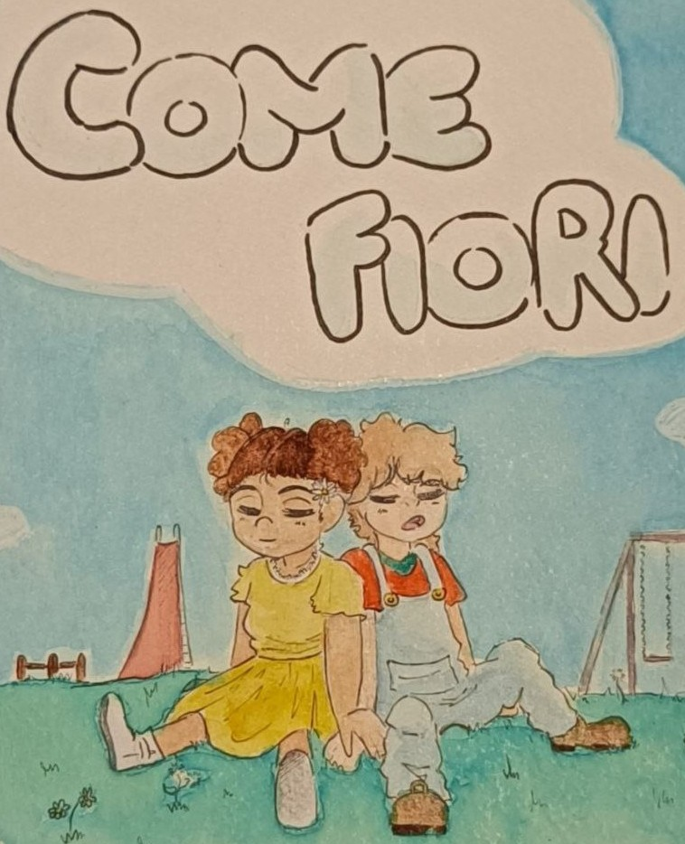

"Come Fiori"
Lavoro svolto durante il 4° anno di Liceo, per la partecipazione del bando “Pitch” - dal tema “dell’inclusività”.
Come Fiori” è un breve soggetto che narra la nascita di una piccola amicizia tra i giochi di un parco,
destinata ad essere più profonda di quanto si possa immaginare.
Scarica qui il pdf per leggere
il racconto!
 DOWNLOAD
DOWNLOAD